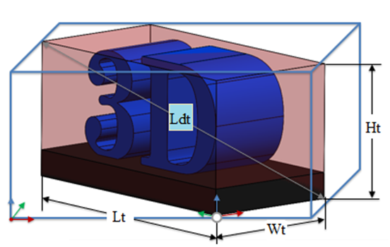
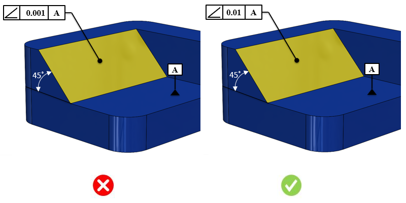

3D CAD上で利用可能な幾何公差（GD&T）情報およびPMI情報を特定し、指定された値に対して厳しすぎる公差を検証します。
角度公差は、あるフィーチャが別のフィーチャに対して、基準となる角度でどのような向きを持つかを示すための記号です。他の部品と角度をもって嵌合する重要なフィーチャでは、角度公差が使用され、嵌合面の角度および平面度を制御するのに役立ちます。曲げ形状を持つプレス部品の場合、角度公差は、プレス加工によって形成される3次元表面が公差域内に収まることを保証します。この公差は角度のばらつきを直接制御するものではなく、基準（データム）に基づいて表面が存在できる位置を制御することで、間接的に角度を制御します。軸に対して角度公差が指定された場合、公差域はデータムに対して角度を持つ軸の周囲に形成される円筒となります。
厳しい公差は、製品設計、製造、検査時間に影響を与えます。公差が厳しくなることで、以下の要素が追加され、最終的な製品コストが増加します。
高度または特殊な検査装置が必要になる
工具交換の頻度が増加する
最終製品受け入れ時の歩留まりが低下する
スクラップ率が高くなる
原材料の使用量が増加する
過度に厳しい公差はコスト増加と生産性低下につながります。適切な公差が設定された部品は、優れた嵌合性と機能を持ち、製造効率も向上します。組立工程においては、公差の厳しい部品は組み付けが困難になり、組立コストの増加を招きます。
適切な公差を設定する際には、以下の点を考慮する必要があります。
部品機能に基づいて、重要公差と非重要公差を区別する
不必要に厳しい公差を避ける
品質コストを最小化する
一般的な指針として、過度に厳しい公差はコスト増加と生産性低下を招きます。公差値は、社内の加工能力および検査能力を考慮して設定する必要があります。
DFMProでは、公差の種類、部品サイズ範囲、およびそれに対応する公差値を構成することができます。
部品外形サイズ = 部品の最大対角長のおおよその値

ここでは、
Lt = 長さ
Wt = 幅
Ht = 高さ
Ldt = 部品対角長

注記：
CADモデルに設定されている公差は、eDrawingsレポートでは表示されません。
ルール構成で設定された公差値は、公差域として扱われます。
このルールは、面やエッジなど、CADフィーチャに関連付け（参照）られた幾何公差のみを対象とします。
このルールは、幾何公差を持つ部品モデルに対して実行されます。